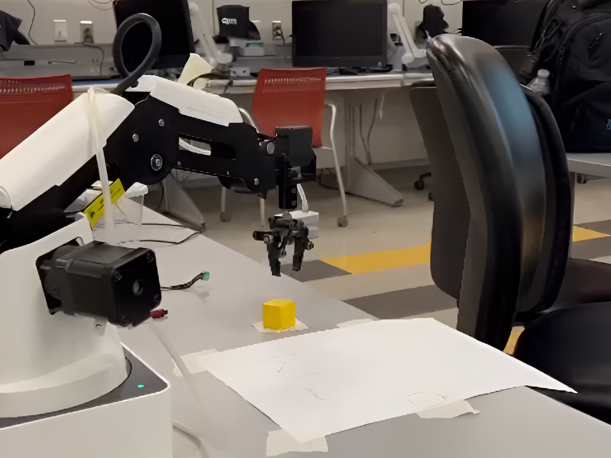

Dobot Projects
August 2023
Arizona State University, Tempe, Arizona
Project Description: Teaching Dobot to Write "CIM"

Objective:
The primary objective of this project was to instruct the Dobot robotic arm in writing the letters "CIM." This entailed a two-step process. Initially, we manually wrote the word "CIM" in pencil on the Dobot Template. Subsequently, we employed the Dobot with a pen end effector to replicate the word "CIM" by guiding the robot through a series of straight-line movements. It was crucial to raise the pen between letters and position the robot away from the paper upon task completion.
Recording and Teaching:
In this project, a module was utilized to record and educate the robot regarding the specific points it needed to visit to write "CIM." Recorded points were determined using the lock button on the robot's arm, while teaching points involved inputting XYZ coordinates directly, without physically moving the robot. This approach, commonly used in industry, offered efficiency and speed, particularly when coordinates or point relationships were well-defined.
Click the Youtube logo for this project video.
Project Description: Dobot Pick and Place Automation
In this project, I developed an automated pick and place system using a Dobot robotic arm. The primary objective was to create a precise and efficient system capable of accurately picking up and placing objects. Here's an overview of the project:
1. Gripper Attachment:
Initially, the gripper was securely attached to the rotational servo of the Dobot robotic arm, enabling it to grasp objects effectively.
2. Robot Setup:
Following gripper attachment, the robotic arm was positioned on the robot platform, and all necessary connections were made to ensure smooth functionality.
3. Field Diagram:
To facilitate the pick and place operation, a field diagram was utilized as a reference, featuring designated areas for object handling.
4. Recording Positions:
A sequence of precise positions was programmed into the Dobot robotic arm's control interface to enable the pick and place operations. The following positions were recorded:
- Home: The initial starting position.
- Above Pick: Positioned above the object to be picked.
- At Pick: The location where the gripper grasped the object.
- Above Pick: Returning to the above pick position.
- Above Place: Positioned above the target placement location.
- At Place: The position where the gripper released the object.
- Above Place: Returning to the above place position.
- Home: Returning to the initial starting position.
By recording these key positions, the Dobot robotic arm efficiently executed the pick and place task, demonstrating its precision and potential for automation across various applications.
Click the Youtube logo for this project video.
Project Description: Dobot Picking, Stacking, and Destacking Automation

In this project, I designed an automation system employing a Dobot robotic arm for intricate tasks, including picking, stacking, and destacking objects. The primary goal was to create a precise and efficient system capable of stacking objects neatly. Here's an outline of the project:
1. Gripper Attachment:
Initially, the gripper was securely attached to the rotational servo of the Dobot robotic arm, enabling effective object handling.
2. Robot Setup:
Subsequently, the robotic arm was securely positioned on the robot platform, with all necessary connections made to ensure seamless operation.
3. Field Diagram:
A field diagram served as a reference for the arm's movements, featuring designated areas for picking, stacking, and destacking.
4. Recording Positions:
Precise sequences of positions were programmed into the Dobot robotic arm's control interface to enable the pick and place operations. The following positions were recorded:
- Home: The initial starting position.
- Above Pick: Positioned above the object to be picked.
- At Pick: The location where the gripper grasped the object.
- Above Pick: Returning to the above pick position.
- Above Stacking: Positioned above the stacked objects.
- At Stack: The location where the gripper placed objects, creating a stack.
- Above Stacking: Returning to the above stacking position.
- Above Destack: Positioned above the stack to destack objects.
- At Destack: The location where the gripper lifted a single object from the stack.
- Above Destack: Returning to the above destack position.
- Home: Returning to the initial starting position.
By executing these precise movements, the Dobot robotic arm effectively performed complex tasks, including picking objects, stacking them, and carefully destacking one object at a time. This project highlighted the Dobot robotic arm's versatility and precision in handling a range of tasks, making it a valuable tool across various applications.
Click the Youtube logo for this project video.